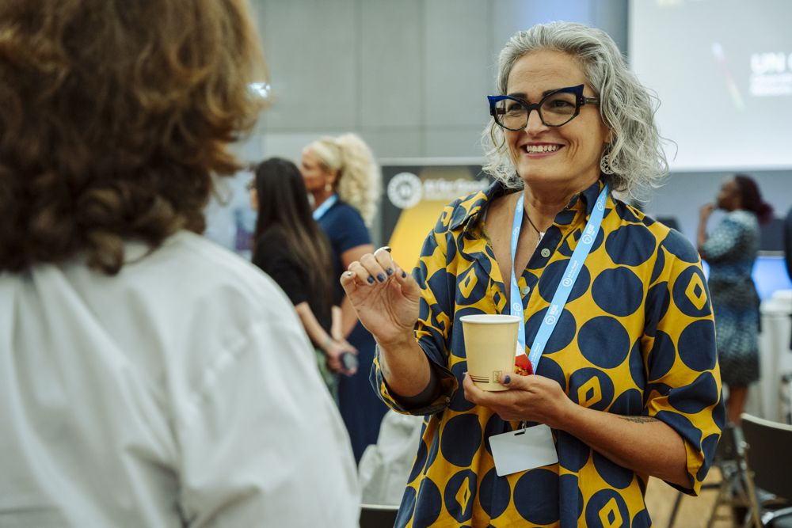

The priorities are agreed.
What actually changes on Monday?
When agreed priorities are not translating into progress, I work with your team to understand what is holding delivery back. Together, we develop a workable response and put it into practice, adjusting as we learn what helps delivery move forward.
For organisations working in international development and humanitarian sectors, across organisational priorities, programmes and teams.
“We approved the strategy months ago. Why does everything still run the old way?”
“How do we make AI genuinely useful to our teams, beyond the pilot?”
“Our results framework satisfies donors. Why doesn’t it help us decide anything?”
The Monday-Morning Test
What is supporting or holding back
your delivery?
Choose a strategy or plan and answer five questions about how the work is organised. You will get a reading of the arrangements you report, how they may affect one another and what is worth examining more closely.
A first reading from your answers, not a diagnosis. No email required.
How I help
From understanding the blockage
to changes that work.

- Understand what is holding delivery back.
Examine the priority, the work required and the conditions affecting delivery.
- Develop a workable response.
Agree practical changes with the people who will put them into use.
- Put the changes into practice.
Work with your team through implementation, adjusting as we learn.
You can commission an assessment on its own, a response your team takes forward, or support through implementation.
Experience behind the work
100+ projects 20+ countries
I designed and led changes across this portfolio, working with teams to revise planned work and improve how delivery decisions were made.
Experience gained inside international organisations.
More from my track record
Results from roles inside international organisations, each with what it measures.
- A funding pipeline that grew from £6M to £22M in under twelve months. This is pipeline value, which is work identified and being pursued, and not income secured.
- 90% of staff using new AI tools within two months of their introduction, measured across the teams the rollout covered.
- Proposal drafting reduced from two weeks to two days over the same period, measured on the drafting step alone.
- A $400M portfolio brought under one results-management system across 13 independent organisations. This is the scale of the portfolio and the systems work it took, not money raised or a financial gain.

About
Hi, I'm Ale.
I have spent twenty years inside international organisations, working through the practical challenges of turning agreed priorities into work that people can actually carry forward. Give me a tangled problem and a room full of people who see it differently, and I am in my element.
I am endlessly curious and a forever-student, always learning something new and asking what we are really trying to solve. I like getting beneath the first explanation, connecting the dots and working with people to find a response that makes sense in their world.
For me, that means making change something people are part of. I want to understand how they experience the work, what they have already tried and what would help them move it forward.
Off the clock, I'm a mum, a cat person 🐱 (don't worry, I love dogs too), and happiest under water. I'm a certified Divemaster 🤿 🐠, and the ocean is where I connect my own dots.
Alessandra (Ale) Furtado · Brazilian–Portuguese, based in Europe · Portuguese (native), English & Spanish (fluent), French (intermediate) · MA International Development (Distinction), University of Westminster · PRINCE2
Meet Ale
Sailing, diving and how I work with people.
Music: “Wholesome” by Kevin MacLeod (incompetech.com) · CC BY 4.0
Photo & video: Cristina Lopes
Let’s talk
What would you like
to move forward?
We can discuss your test reading or a priority your organisation is working to deliver.
A 20-minute conversation, and you are welcome to bring your test reading.